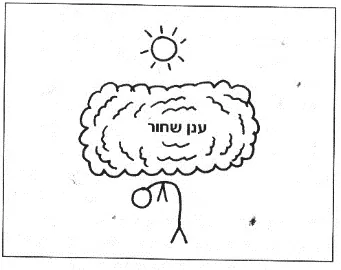
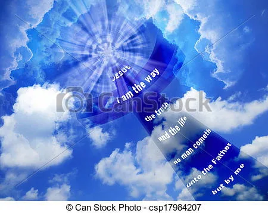
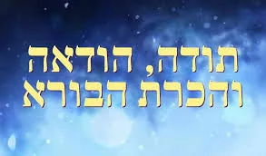
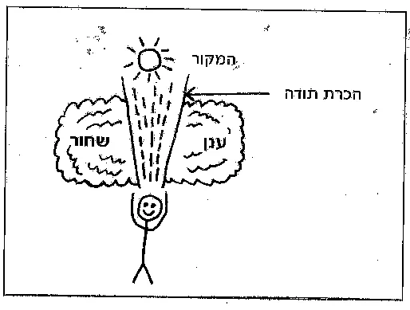

לחוש את הבורא
מאמר מדהים המופיע בספר הכלים – שני פסיכולגים מניו יורק ובלוס אנז'לס שכתבו ספר רב מכר שתרגמו אותו ל 35 שפות. מתוך הפרק החמישי – זרימת הודיה.
הקדמה:
משהו תמיד הדאיג את אלישבע. לא משנה מה זה היה – הרעש המוזר שהמכונית שלה השמיעה כשהתניעה אותה או כאבי הראש שלבטח נגרמים מגידול בראשה – הדאגה היתה מרכז קיומה.
לאלישבע היה מבט רדוף של אדם שחייו מתפרקים לגורמים. למעשה חייה היו די יציבים, ובתחומים המהותיים הם היו אפילו מבורכים. בעל נפלא ומסור, פרנסה טובה ומסודרת, מבחינה חומרית לא חסר לה דבר. אבל למרות זאת, מבחינת אלישבע החיים היו סדרה של אסונות שהיה עליה להתמודד איתם בכוחות עצמה.
בלתי הגיוניים ככל שהיו, בעיניה הפחדים שלה היו אמיתיים כיוון שהיא חיה בעולם שיצרה בעצמה. כולנו עושים זאת במידה זו או אחרת. נדמה לנו שאנחנו מגיבים לעולם האמיתי, אך למעשה אנחנו מגיבים לעולם הקיים במוחנו. מאחר שהעולם הפנימי הזה כה עוצמתי, הוא מונע מאיתנו לראות את המציאות. "המוח הוא מקום משל עצמו, וכשלעצמו, יכול להפוך גיהנום לגן עדן וגן עדן לגיהינום".
הענן השחור
רציתי להדגים ליוסי איך זה עובד. ביקשתי ממנו לעצום את עיניו ולשחזר את הדאגה האחרונה שהיתה לו. "שמעתי דיווח על כיפות הקרח המפשירות בקוטב... אני חושב שאנחנו צריכים לעבור לגור באיזור פנימי יותר שבו הקרקע גבוהה יותר". ביקשתי מיוסי להניח לדאגה המסוימת הזאת, ולבדוק אם הוא מרגיש משהוא מאחורי הדאגות.
הוא פקח את עיניו בבהלה. "הרגשתי שיש סביבי אפלה כבדה, כמו ענן מאיים". אמרתי לו לנסות לחזור על אותה פעולה עם דאגה אחרית – האם בנו יספיק להגיע בזמן למבחן כניסה לישיבה. הוא ניסה לעשות זאת, ולהפתעתו הרגיש סביבו בדיוק אותה אפלה.
אנחנו קורים לנוכחות הזאת ענן שחור. כשאתם דואגים ללא הרף, בכל נושא שהוא, אתם יוצרים ארנגיה שלילית שמרחפת מעליכם כמו ענן. הענן השחור מסלק את כל הדברים החיוביים ויוצר תחושה של אסון העומד להתרחש, ואין זה משנה אם מדובר באסון טבע, במחלה או בטעות אנוש.
כשזה קורה בחיים עצמם, הענן כהה ומדכא ביותר. הוא מוחק את כל הדברים החיוביים ומשכנע אתכם שרק השלילי אמיתי.
האיור הבא מתאר את הענן בפעולה:

מעל הענן נמצאת השמש, הבורא עולם הטוב והמטיב, המייצג את כל מה שתקין בעולם. ציירנו את הענן השחור כמעטה בלתי חדיר שאינו מאפשר לדברים הטובים להכנס. השמש עדין זורחת, אבל בשביל האדם הנמצא מתחת לענן היא אינה קיימת. אין שמחה רק שליליות. האדם כפוף בגלל כובדו של העולם החשוב שמחשבותיו יצרו. כשחיים בצורה כזאת משלמים מחיר גבוה מאוד.
האדם נמחץ על ידי הענן השחור אינו זוכה לשלוות נפש. לרובנו, שלוות נפש היא תחושת יקרת ערך. זאת התחושה שהכול מונח במקומו, ש"הכל בסדר". כל אחד מאיתנו חווה את התחושה הזאת ברגעים חמקמקים - שלווה פנימית, תחושה שאתה נמצא בהרמוניה עם הקיום כולו.
הענן השחור מחסל את תחושת השלווה הזאת. כשהוא מכשף אותכם, אינכם יכולים לראות אלא את הדברים שאינם תקינים בעולם. ללא תחושת שלווה כל דבר הופך למשבר. יום אחד יוסי הסתכל עלי, מותש, והודה "אני לא זוכר, מתי בפעם האחרונה משהוא גרם לי לשמוח באמת".
מדוע כל זה קורה?
בגלל הנחת היסוד שלנו, אנחנו מניחים שהיקום אדיש כלפינו. זה גורם לנו להרגיש בודדים ביקום שלא אכפת לו מאיתנו. אם נחיה שהיקום כן מתעניין ברווחתנו ותומך בנו בדרכים גדולים כקטנות, לא נהיה כל כך מודאגים.
כשאמרתי זאת ליוסי, הוא אמר "כבר אמרו לי את זה, אבל אני פשוט לא מצליח להרגיש את זה".
לרוב האנשים קשים להבין זאת. למרבה המזל, יש שיטה שבעזרתה יכול כל אדם לחוות את הנדיבות האינסופית של הבורא.
הכוח הגבוה: הכרת תודה
הבורא נוכח תמיד, הוא יצר את כל הדברים שאתם רואים. באורח פלא, הוא יצר חיים והוא ממשיך להיות מעורב מקרוב במה שקורא לכל נפש חיה שהוא יצר. וזה כולל אתכם. בעבר הוא נתן לכם חיים, בהווה הוא תומך בכם, ועוצמתו היצירתית ממלאת את עתידכם באפשרויות אינסופיות.
ברגע שתכירו בכל מה שקיבלתם, תרגישו שאתם מחוברים לבורא – אז לא תרגישו כה בודדים, והצורך שלכם לדאוג יקטן.
כשהסברתי זאת ליוסי, הוא נראה מהוסס. "תמיד קנאתי באנשים שמאמינים בדברים האלה, כי כנראה זה ממש מעודד. אבל אני יותר מדי סקפטי. זאת אומרת, אך אפשר להיות בטוחים שהבורא קיים?
שאלה טובה. בדרך כלל, כדי שנאמין שמשהו קיים אנחנו צריכים לראות אותו במו עיננו (או לקלוט אותו באחד מארבעת החושים הפיזיים האחרים שלנו).
הבעיה היא שהבורא אינו קיים בעולם הפיזי. הוא קיים בעולם רוחני, עולם שחמשת חושינו הפיזיים אינם מסוגלים לקלוט. כדי לחוות את הבורא אנחנו זקוקים לתפיסה מסוג חדש, וסיפורו של נתי חושף את טיבה. כשהבין נתי פתאום שחייו ניתנו לו בחזרה, לבו הוצף בהכרת תודה. רגש זה של הכרת תודה - ולא משהו שהוא ראה או שמע – הוא שהעניק לו קשר אישי עם הבורא שכל כולו נתינה.
ברובד אחד, הכרת תודה היתה תגובתו של נתי לנדיבותו של הבורא. אבל ברובד עמוק יותר, הוא חש את הבורא באמצעות הכרת התודה. ייתכן שבהתחלה יהיה לכם מוזר להתייחס להכרת תודה כאמצעי של תפיסת המציאות ולא כתגובה רגשית גרידא. אבל לאחר שתתַרגלו זאת, תיווכחו לדעת שהכרת תודה לבורא קולטת את העולם הרוחני בדיוק באותה בהירות שבה עיניכם ואוזניכם קולטות את העולם הפיזי.

הדבר הופך את הכרת התודה להרבה יותר חשוב מאשר רגש - הוא הופך אותה לכוח גבוה. ככלל, הכוחות הגבוהים מאפשרים לכם לעשות דברים שמעולם לא דמיינתם שתהיו מסוגלים לעשות. במקרה זה, הכרת התודה מאפשרת לכם לקלוט דברים שמעולם לא דמיינתם שתוכלו לקלוט.
בקיצור: הכרת תודה היא איבר קליטה גבוה יותר שדרכו אתם יכולים להעריך בצורה מדויקת יותר אמת בסיסית. הבורא פועל, בצורה מסתורית, ואתם נהנים בקביעות מנדיבותו. הבורא תומך בכם בכל רגע ורגע, מיום הולדתכם ועד יום מותכם. הכרת תודה על מערכת היחסים הזאת אינה עניין של נימוס אלא תפיסת המציאות בדרך חדשה לגמרי. עצם תחושת הכרת התודה היא החוט המקשר המאפשר לכם לחוש את נוכחותו של הבורא.
אם אתם באמת רוצים להתגבר על השליליות שלכם, אתם זקוקים לדרך שתאפשר לכם נגישות לבורא בכל עת, ללא קשר לנסיבות. הדרך היחידה להשיג גישה זו היא ללמוד לחוש הכרת תודה כל אימת שתרצו בכך.
לפניכם הכלי שבעזרתו תעוררו את איבר הכרת התודה.

זרימת הודיה
חשבו על דברים שאתם יכולים להיות אסירי תודה על קיומם בחייכם, במיוחד על אלה שבדרך כלל אתם מקבלים כמובנים מאליהם. הודו עליהם באמירה, בקצב איטי שיאפשר לכם להרגיש את ערכו של כל אחד מהם. "אני אסיר תודה לבורא על ראייתי, אני אסיר תודה לבורא שיש לי מים חמים" וכדומה. הודו על חמשה פריטים לפחות – ידרשו לכם לא יותר משלושים שניות.
עליכם להרגיש שהכרת התודה שאתם מביעים זורמת כלפי מעלה, ישירות מלבכם. וכשתסיימו להזכיר את הדברים שבחרתם בהם, לבכם צריך להמשיך לחולל הכרת תודה, אך הפעם ללא מילים. הארנגיה שאתם שולחים עכשיו היא זרימת ההודיה.
בעוד ארנגיה זו נובעת מלבכם, בית החזה שלכם יתרכך וייפתח. במצב זה תרגישו כיצד אתם מתקרבים אל נוכחות עצומה, מלאה בעוצמת הנתינה האינסופית. יצרתם את החיבור אל המקור – אל הבורא.

שלוות נפש תמידית יכולה לנבוע רק מחיבור אל המקור. אבל כדי שהיא אכן תהיה קבועה, חייב להיות חיבור מתמשך אל המקור. ככל שתכירו יותר תודה על מה שכבר יש לכם, תקבלו מהמקור אנרגיה רבה יותר. כך תיפתח לכם דלת לדרך חיים חדשה לגמרי, שבה האנרגיה לנוע קדימה מבוססת על אושר במקום על מצוקה.
שאלות נפוצות:
1. כשניסיתי להשתמש בזרימת הודיה לא הצלחתי להרגיש את הבורא. למעשה לא הרגשתי שום דבר. מה הטעות שלי?
די שכיח שאנשים אינם מרגישים דבר כשהם מתחילים להשתמש בזרימת הודיה. אצל רובנו, איבר הכרת התודה חסר תועלת , בדיוק כמו רגל שנרדמה: צריך להניע אותה כדי שתחזור לתפקד. באופן דומה, יתכן שתצטרכו להשתמש בזרימת ההודיה פעמים רבות כדי להעיר את חוש הכרת התודה שלכם. רק אז תוכלו להרגיש באמת את הבורא.
היו סבלניים כלפי עצמכם. אם רגלכם נרדמת, לפחות אתם זוכרים את התחושה שאמורה להיות לכם ברגל. לעומת זאת מעולם לא השתמשתם בהכרת תודה כאיבר שמרגיש את המקור, לכן יהיה עליכם גם להעיר אותו וגם להתרגל לתחושה. תנוח דעתכם, הכרת תורה היא אכן איבר אמיתי, והוא קיים בכל אחד מאיתנו. מעולם לא פגשתי אדם שאינו יכול להפעיל אותו אם הוא משתדל מאוד.
למעשה בכל עת עומדת לרשותכם אספקה אינסופית של ארנגיה. היא אינה מגיעה מהגוף שלכם, אלא ישירות מהבורא. והמפתח להתחברות לבורא היא זרימת ההודיה.
ע"כ קיצור מתוך הספר הכלים.
מקורות לדברים מחז''ל
כל דבריהם – שההודיה היא אמצעי לחוש ולראות בחוש את בורא עולם כתובה כבר במקרותינו:
נאמר בישעיה (לח, ט- י"א')
מִכְתָּב, לְחִזְקִיָּהוּ מֶלֶךְ-יְהוּדָה, בַּחֲלֹתוֹ, וַיְחִי מֵחָלְיוֹ. אֲנִי אָמַרְתִּי, בִּדְמִי יָמַי אֵלֵכָה--בְּשַׁעֲרֵי שְׁאוֹל; פֻּקַּדְתִּי, יֶתֶר שְׁנוֹתָי. אָמַרְתִּי לֹא-אֶרְאֶה יָהּ, יָהּ בְּאֶרֶץ הַחַיִּים;
כתב הרד"ק: פירש רבינו סעדיה, ענין ההודאה, ונכון הוא, כי ראות הא-ל הוא ההודאה והשבח לפניו והתבונן בדרכיו.
אמר על כך הגה"צ רבי שלמה וולבה זצ"ל (עלי שור ח"ב) שדבר זה לא יסולא בפז, הרי הקב"ה הוא 'א- ל מסתתר' ו'יושב בסתר עליון', ובמה יכולים לראות אותו בראיה ממש כביכול? אלא זהו ענין ההודאה, כי מי שלא העמיק פעם בחייו בהכרת הטובה הכללי המקיף אותו מכל צד ורואה את עצמו רק ככלי קטן לשפע טובה אדיר, לא יבין זאת עד כמה שנרחיב ביאור, אלא ככה הוא, שהמכיר טובה ומודה עליה בכל לבו, רואה הוא מבעד לכל השפע את מי שנותן לו הכל, כי כן הוא, ראות הא-ל היא ההודאה, ודי בזה להלהיב אותנו להתלמד בהודאה לה'.